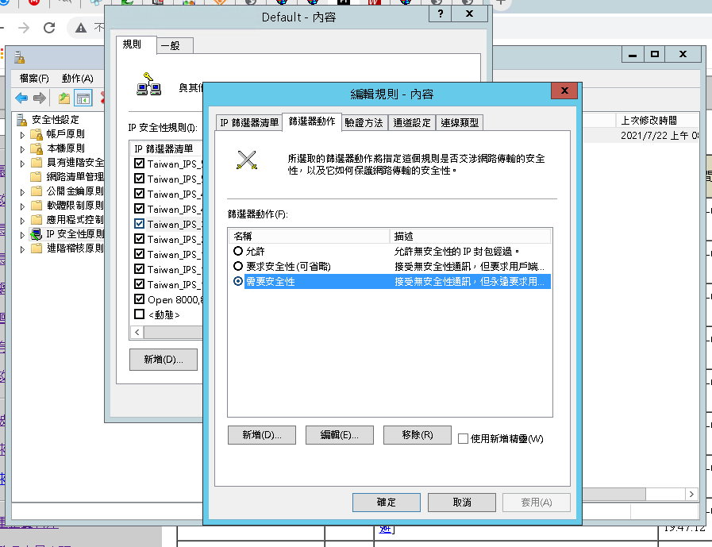

<<限制遠端桌面(RDP)只能允許台灣IP連線>>
說明：
利用Windows 專業、企業版或者Windows Server任何版本內建的IPSEC功能進行限制，只允許台灣IP連線。
參閱技術：
<https://rms.t...sign.php>
<遠端桌面多人教學>
教學：
1. 首先先將下面「程式碼」複製，並使用最高權限的指令模式執行。
Netsh ipsec static add filter filterlist = Taiwan_IPS_RDP Srcaddr = 2.0.0.0 srcmask=255.0.0.0 dstaddr = me dstport = 3389 protocol =TCP mirrored = yes
Netsh ipsec static add filter filterlist = Taiwan_IPS_RDP Srcaddr = 3.0.0.0 srcmask=255.0.0.0 dstaddr = me dstport = 3389 protocol =TCP mirrored = yes
Netsh ipsec static add filter filterlist = Taiwan_IPS_RDP Srcaddr = 4.0.0.0 srcmask=255.0.0.0 dstaddr = me dstport = 3389 protocol =TCP mirrored = yes
Netsh ipsec static add filter filterlist = Taiwan_IPS_RDP Srcaddr = 5.0.0.0 srcmask=255.0.0.0 dstaddr = me dstport = 3389 protocol =TCP mirrored = yes
Netsh ipsec static add filter filterlist = Taiwan_IPS_RDP Srcaddr = 6.0.0.0 srcmask=255.0.0.0 dstaddr = me dstport = 3389 protocol =TCP mirrored = yes
Netsh ipsec static add filter filterlist = Taiwan_IPS_RDP Srcaddr = 7.0.0.0 srcmask=255.0.0.0 dstaddr = me dstport = 3389 protocol =TCP mirrored = yes
Netsh ipsec static add filter filterlist = Taiwan_IPS_RDP Srcaddr = 8.0.0.0 srcmask=255.0.0.0 dstaddr = me dstport = 3389 protocol =TCP mirrored = yes
Netsh ipsec static add filter filterlist = Taiwan_IPS_RDP Srcaddr = 9.0.0.0 srcmask=255.0.0.0 dstaddr = me dstport = 3389 protocol =TCP mirrored = yes
Netsh ipsec static add filter filterlist = Taiwan_IPS_RDP Srcaddr = 10.0.0.0 srcmask=255.0.0.0 dstaddr = me dstport = 3389 protocol =TCP mirrored = yes
Netsh ipsec static add filter filterlist = Taiwan_IPS_RDP Srcaddr = 11.0.0.0 srcmask=255.0.0.0 dstaddr = me dstport = 3389 protocol =TCP mirrored = yes
Netsh ipsec static add filter filterlist = Taiwan_IPS_RDP Srcaddr = 12.0.0.0 srcmask=255.0.0.0 dstaddr = me dstport = 3389 protocol =TCP mirrored = yes
Netsh ipsec static add filter filterlist = Taiwan_IPS_RDP Srcaddr = 13.0.0.0 srcmask=255.0.0.0 dstaddr = me dstport = 3389 protocol =TCP mirrored = yes
Netsh ipsec static add filter filterlist = Taiwan_IPS_RDP Srcaddr = 14.0.0.0 srcmask=255.0.0.0 dstaddr = me dstport = 3389 protocol =TCP mirrored = yes
Netsh ipsec static add filter filterlist = Taiwan_IPS_RDP Srcaddr = 15.0.0.0 srcmask=255.0.0.0 dstaddr = me dstport = 3389 protocol =TCP mirrored = yes
Netsh ipsec static add filter filterlist = Taiwan_IPS_RDP Srcaddr = 16.0.0.0 srcmask=255.0.0.0 dstaddr = me dstport = 3389 protocol =TCP mirrored = yes
Netsh ipsec static add filter filterlist = Taiwan_IPS_RDP Srcaddr = 17.0.0.0 srcmask=255.0.0.0 dstaddr = me dstport = 3389 protocol =TCP mirrored = yes
Netsh ipsec static add filter filterlist = Taiwan_IPS_RDP Srcaddr = 18.0.0.0 srcmask=255.0.0.0 dstaddr = me dstport = 3389 protocol =TCP mirrored = yes
Netsh ipsec static add filter filterlist = Taiwan_IPS_RDP Srcaddr = 19.0.0.0 srcmask=255.0.0.0 dstaddr = me dstport = 3389 protocol =TCP mirrored = yes
Netsh ipsec static add filter filterlist = Taiwan_IPS_RDP Srcaddr = 20.0.0.0 srcmask=255.0.0.0 dstaddr = me dstport = 3389 protocol =TCP mirrored = yes
Netsh ipsec static add filter filterlist = Taiwan_IPS_RDP Srcaddr = 21.0.0.0 srcmask=255.0.0.0 dstaddr = me dstport = 3389 protocol =TCP mirrored = yes
Netsh ipsec static add filter filterlist = Taiwan_IPS_RDP Srcaddr = 22.0.0.0 srcmask=255.0.0.0 dstaddr = me dstport = 3389 protocol =TCP mirrored = yes
Netsh ipsec static add filter filterlist = Taiwan_IPS_RDP Srcaddr = 23.0.0.0 srcmask=255.0.0.0 dstaddr = me dstport = 3389 protocol =TCP mirrored = yes
Netsh ipsec static add filter filterlist = Taiwan_IPS_RDP Srcaddr = 24.0.0.0 srcmask=255.0.0.0 dstaddr = me dstport = 3389 protocol =TCP mirrored = yes
Netsh ipsec static add filter filterlist = Taiwan_IPS_RDP Srcaddr = 25.0.0.0 srcmask=255.0.0.0 dstaddr = me dstport = 3389 protocol =TCP mirrored = yes
Netsh ipsec static add filter filterlist = Taiwan_IPS_RDP Srcaddr = 26.0.0.0 srcmask=255.0.0.0 dstaddr = me dstport = 3389 protocol =TCP mirrored = yes
Netsh ipsec static add filter filterlist = Taiwan_IPS_RDP Srcaddr = 28.0.0.0 srcmask=255.0.0.0 dstaddr = me dstport = 3389 protocol =TCP mirrored = yes
Netsh ipsec static add filter filterlist = Taiwan_IPS_RDP Srcaddr = 29.0.0.0 srcmask=255.0.0.0 dstaddr = me dstport = 3389 protocol =TCP mirrored = yes
Netsh ipsec static add filter filterlist = Taiwan_IPS_RDP Srcaddr = 30.0.0.0 srcmask=255.0.0.0 dstaddr = me dstport = 3389 protocol =TCP mirrored = yes
Netsh ipsec static add filter filterlist = Taiwan_IPS_RDP Srcaddr = 31.0.0.0 srcmask=255.0.0.0 dstaddr = me dstport = 3389 protocol =TCP mirrored = yes
Netsh ipsec static add filter filterlist = Taiwan_IPS_RDP Srcaddr = 32.0.0.0 srcmask=255.0.0.0 dstaddr = me dstport = 3389 protocol =TCP mirrored = yes
Netsh ipsec static add filter filterlist = Taiwan_IPS_RDP Srcaddr = 33.0.0.0 srcmask=255.0.0.0 dstaddr = me dstport = 3389 protocol =TCP mirrored = yes
Netsh ipsec static add filter filterlist = Taiwan_IPS_RDP Srcaddr = 34.0.0.0 srcmask=255.0.0.0 dstaddr = me dstport = 3389 protocol =TCP mirrored = yes
Netsh ipsec static add filter filterlist = Taiwan_IPS_RDP Srcaddr = 35.0.0.0 srcmask=255.0.0.0 dstaddr = me dstport = 3389 protocol =TCP mirrored = yes
Netsh ipsec static add filter filterlist = Taiwan_IPS_RDP Srcaddr = 37.0.0.0 srcmask=255.0.0.0 dstaddr = me dstport = 3389 protocol =TCP mirrored = yes
Netsh ipsec static add filter filterlist = Taiwan_IPS_RDP Srcaddr = 38.0.0.0 srcmask=255.0.0.0 dstaddr = me dstport = 3389 protocol =TCP mirrored = yes
Netsh ipsec static add filter filterlist = Taiwan_IPS_RDP Srcaddr = 40.0.0.0 srcmask=255.0.0.0 dstaddr = me dstport = 3389 protocol =TCP mirrored = yes
Netsh ipsec static add filter filterlist = Taiwan_IPS_RDP Srcaddr = 41.0.0.0 srcmask=255.0.0.0 dstaddr = me dstport = 3389 protocol =TCP mirrored = yes
Netsh ipsec static add filter filterlist = Taiwan_IPS_RDP Srcaddr = 44.0.0.0 srcmask=255.0.0.0 dstaddr = me dstport = 3389 protocol =TCP mirrored = yes
Netsh ipsec static add filter filterlist = Taiwan_IPS_RDP Srcaddr = 46.0.0.0 srcmask=255.0.0.0 dstaddr = me dstport = 3389 protocol =TCP mirrored = yes
Netsh ipsec static add filter filterlist = Taiwan_IPS_RDP Srcaddr = 47.0.0.0 srcmask=255.0.0.0 dstaddr = me dstport = 3389 protocol =TCP mirrored = yes
Netsh ipsec static add filter filterlist = Taiwan_IPS_RDP Srcaddr = 48.0.0.0 srcmask=255.0.0.0 dstaddr = me dstport = 3389 protocol =TCP mirrored = yes
Netsh ipsec static add filter filterlist = Taiwan_IPS_RDP Srcaddr = 50.0.0.0 srcmask=255.0.0.0 dstaddr = me dstport = 3389 protocol =TCP mirrored = yes
Netsh ipsec static add filter filterlist = Taiwan_IPS_RDP Srcaddr = 51.0.0.0 srcmask=255.0.0.0 dstaddr = me dstport = 3389 protocol =TCP mirrored = yes
Netsh ipsec static add filter filterlist = Taiwan_IPS_RDP Srcaddr = 52.0.0.0 srcmask=255.0.0.0 dstaddr = me dstport = 3389 protocol =TCP mirrored = yes
Netsh ipsec static add filter filterlist = Taiwan_IPS_RDP Srcaddr = 53.0.0.0 srcmask=255.0.0.0 dstaddr = me dstport = 3389 protocol =TCP mirrored = yes
Netsh ipsec static add filter filterlist = Taiwan_IPS_RDP Srcaddr = 54.0.0.0 srcmask=255.0.0.0 dstaddr = me dstport = 3389 protocol =TCP mirrored = yes
Netsh ipsec static add filter filterlist = Taiwan_IPS_RDP Srcaddr = 55.0.0.0 srcmask=255.0.0.0 dstaddr = me dstport = 3389 protocol =TCP mirrored = yes
Netsh ipsec static add filter filterlist = Taiwan_IPS_RDP Srcaddr = 56.0.0.0 srcmask=255.0.0.0 dstaddr = me dstport = 3389 protocol =TCP mirrored = yes
Netsh ipsec static add filter filterlist = Taiwan_IPS_RDP Srcaddr = 57.0.0.0 srcmask=255.0.0.0 dstaddr = me dstport = 3389 protocol =TCP mirrored = yes
Netsh ipsec static add filter filterlist = Taiwan_IPS_RDP Srcaddr = 62.0.0.0 srcmask=255.0.0.0 dstaddr = me dstport = 3389 protocol =TCP mirrored = yes
Netsh ipsec static add filter filterlist = Taiwan_IPS_RDP Srcaddr = 63.0.0.0 srcmask=255.0.0.0 dstaddr = me dstport = 3389 protocol =TCP mirrored = yes
Netsh ipsec static add filter filterlist = Taiwan_IPS_RDP Srcaddr = 64.0.0.0 srcmask=255.0.0.0 dstaddr = me dstport = 3389 protocol =TCP mirrored = yes
Netsh ipsec static add filter filterlist = Taiwan_IPS_RDP Srcaddr = 65.0.0.0 srcmask=255.0.0.0 dstaddr = me dstport = 3389 protocol =TCP mirrored = yes
Netsh ipsec static add filter filterlist = Taiwan_IPS_RDP Srcaddr = 66.0.0.0 srcmask=255.0.0.0 dstaddr = me dstport = 3389 protocol =TCP mirrored = yes
Netsh ipsec static add filter filterlist = Taiwan_IPS_RDP Srcaddr = 67.0.0.0 srcmask=255.0.0.0 dstaddr = me dstport = 3389 protocol =TCP mirrored = yes
Netsh ipsec static add filter filterlist = Taiwan_IPS_RDP Srcaddr = 68.0.0.0 srcmask=255.0.0.0 dstaddr = me dstport = 3389 protocol =TCP mirrored = yes
Netsh ipsec static add filter filterlist = Taiwan_IPS_RDP Srcaddr = 69.0.0.0 srcmask=255.0.0.0 dstaddr = me dstport = 3389 protocol =TCP mirrored = yes
Netsh ipsec static add filter filterlist = Taiwan_IPS_RDP Srcaddr = 70.0.0.0 srcmask=255.0.0.0 dstaddr = me dstport = 3389 protocol =TCP mirrored = yes
Netsh ipsec static add filter filterlist = Taiwan_IPS_RDP Srcaddr = 71.0.0.0 srcmask=255.0.0.0 dstaddr = me dstport = 3389 protocol =TCP mirrored = yes
Netsh ipsec static add filter filterlist = Taiwan_IPS_RDP Srcaddr = 72.0.0.0 srcmask=255.0.0.0 dstaddr = me dstport = 3389 protocol =TCP mirrored = yes
Netsh ipsec static add filter filterlist = Taiwan_IPS_RDP Srcaddr = 73.0.0.0 srcmask=255.0.0.0 dstaddr = me dstport = 3389 protocol =TCP mirrored = yes
Netsh ipsec static add filter filterlist = Taiwan_IPS_RDP Srcaddr = 74.0.0.0 srcmask=255.0.0.0 dstaddr = me dstport = 3389 protocol =TCP mirrored = yes
Netsh ipsec static add filter filterlist = Taiwan_IPS_RDP Srcaddr = 75.0.0.0 srcmask=255.0.0.0 dstaddr = me dstport = 3389 protocol =TCP mirrored = yes
Netsh ipsec static add filter filterlist = Taiwan_IPS_RDP Srcaddr = 76.0.0.0 srcmask=255.0.0.0 dstaddr = me dstport = 3389 protocol =TCP mirrored = yes
Netsh ipsec static add filter filterlist = Taiwan_IPS_RDP Srcaddr = 77.0.0.0 srcmask=255.0.0.0 dstaddr = me dstport = 3389 protocol =TCP mirrored = yes
Netsh ipsec static add filter filterlist = Taiwan_IPS_RDP Srcaddr = 78.0.0.0 srcmask=255.0.0.0 dstaddr = me dstport = 3389 protocol =TCP mirrored = yes
Netsh ipsec static add filter filterlist = Taiwan_IPS_RDP Srcaddr = 79.0.0.0 srcmask=255.0.0.0 dstaddr = me dstport = 3389 protocol =TCP mirrored = yes
Netsh ipsec static add filter filterlist = Taiwan_IPS_RDP Srcaddr = 80.0.0.0 srcmask=255.0.0.0 dstaddr = me dstport = 3389 protocol =TCP mirrored = yes
Netsh ipsec static add filter filterlist = Taiwan_IPS_RDP Srcaddr = 81.0.0.0 srcmask=255.0.0.0 dstaddr = me dstport = 3389 protocol =TCP mirrored = yes
Netsh ipsec static add filter filterlist = Taiwan_IPS_RDP Srcaddr = 82.0.0.0 srcmask=255.0.0.0 dstaddr = me dstport = 3389 protocol =TCP mirrored = yes
Netsh ipsec static add filter filterlist = Taiwan_IPS_RDP Srcaddr = 83.0.0.0 srcmask=255.0.0.0 dstaddr = me dstport = 3389 protocol =TCP mirrored = yes
Netsh ipsec static add filter filterlist = Taiwan_IPS_RDP Srcaddr = 84.0.0.0 srcmask=255.0.0.0 dstaddr = me dstport = 3389 protocol =TCP mirrored = yes
Netsh ipsec static add filter filterlist = Taiwan_IPS_RDP Srcaddr = 85.0.0.0 srcmask=255.0.0.0 dstaddr = me dstport = 3389 protocol =TCP mirrored = yes
Netsh ipsec static add filter filterlist = Taiwan_IPS_RDP Srcaddr = 86.0.0.0 srcmask=255.0.0.0 dstaddr = me dstport = 3389 protocol =TCP mirrored = yes
Netsh ipsec static add filter filterlist = Taiwan_IPS_RDP Srcaddr = 87.0.0.0 srcmask=255.0.0.0 dstaddr = me dstport = 3389 protocol =TCP mirrored = yes
Netsh ipsec static add filter filterlist = Taiwan_IPS_RDP Srcaddr = 88.0.0.0 srcmask=255.0.0.0 dstaddr = me dstport = 3389 protocol =TCP mirrored = yes
Netsh ipsec static add filter filterlist = Taiwan_IPS_RDP Srcaddr = 89.0.0.0 srcmask=255.0.0.0 dstaddr = me dstport = 3389 protocol =TCP mirrored = yes
Netsh ipsec static add filter filterlist = Taiwan_IPS_RDP Srcaddr = 90.0.0.0 srcmask=255.0.0.0 dstaddr = me dstport = 3389 protocol =TCP mirrored = yes
Netsh ipsec static add filter filterlist = Taiwan_IPS_RDP Srcaddr = 91.0.0.0 srcmask=255.0.0.0 dstaddr = me dstport = 3389 protocol =TCP mirrored = yes
Netsh ipsec static add filter filterlist = Taiwan_IPS_RDP Srcaddr = 92.0.0.0 srcmask=255.0.0.0 dstaddr = me dstport = 3389 protocol =TCP mirrored = yes
Netsh ipsec static add filter filterlist = Taiwan_IPS_RDP Srcaddr = 93.0.0.0 srcmask=255.0.0.0 dstaddr = me dstport = 3389 protocol =TCP mirrored = yes
Netsh ipsec static add filter filterlist = Taiwan_IPS_RDP Srcaddr = 94.0.0.0 srcmask=255.0.0.0 dstaddr = me dstport = 3389 protocol =TCP mirrored = yes
Netsh ipsec static add filter filterlist = Taiwan_IPS_RDP Srcaddr = 95.0.0.0 srcmask=255.0.0.0 dstaddr = me dstport = 3389 protocol =TCP mirrored = yes
Netsh ipsec static add filter filterlist = Taiwan_IPS_RDP Srcaddr = 96.0.0.0 srcmask=255.0.0.0 dstaddr = me dstport = 3389 protocol =TCP mirrored = yes
Netsh ipsec static add filter filterlist = Taiwan_IPS_RDP Srcaddr = 97.0.0.0 srcmask=255.0.0.0 dstaddr = me dstport = 3389 protocol =TCP mirrored = yes
Netsh ipsec static add filter filterlist = Taiwan_IPS_RDP Srcaddr = 98.0.0.0 srcmask=255.0.0.0 dstaddr = me dstport = 3389 protocol =TCP mirrored = yes
Netsh ipsec static add filter filterlist = Taiwan_IPS_RDP Srcaddr = 99.0.0.0 srcmask=255.0.0.0 dstaddr = me dstport = 3389 protocol =TCP mirrored = yes
Netsh ipsec static add filter filterlist = Taiwan_IPS_RDP Srcaddr = 100.0.0.0 srcmask=255.0.0.0 dstaddr = me dstport = 3389 protocol =TCP mirrored = yes
Netsh ipsec static add filter filterlist = Taiwan_IPS_RDP Srcaddr = 102.0.0.0 srcmask=255.0.0.0 dstaddr = me dstport = 3389 protocol =TCP mirrored = yes
Netsh ipsec static add filter filterlist = Taiwan_IPS_RDP Srcaddr = 104.0.0.0 srcmask=255.0.0.0 dstaddr = me dstport = 3389 protocol =TCP mirrored = yes
Netsh ipsec static add filter filterlist = Taiwan_IPS_RDP Srcaddr = 105.0.0.0 srcmask=255.0.0.0 dstaddr = me dstport = 3389 protocol =TCP mirrored = yes
Netsh ipsec static add filter filterlist = Taiwan_IPS_RDP Srcaddr = 107.0.0.0 srcmask=255.0.0.0 dstaddr = me dstport = 3389 protocol =TCP mirrored = yes
Netsh ipsec static add filter filterlist = Taiwan_IPS_RDP Srcaddr = 108.0.0.0 srcmask=255.0.0.0 dstaddr = me dstport = 3389 protocol =TCP mirrored = yes
Netsh ipsec static add filter filterlist = Taiwan_IPS_RDP Srcaddr = 109.0.0.0 srcmask=255.0.0.0 dstaddr = me dstport = 3389 protocol =TCP mirrored = yes
Netsh ipsec static add filter filterlist = Taiwan_IPS_RDP Srcaddr = 126.0.0.0 srcmask=255.0.0.0 dstaddr = me dstport = 3389 protocol =TCP mirrored = yes
Netsh ipsec static add filter filterlist = Taiwan_IPS_RDP Srcaddr = 127.0.0.0 srcmask=255.0.0.0 dstaddr = me dstport = 3389 protocol =TCP mirrored = yes
Netsh ipsec static add filter filterlist = Taiwan_IPS_RDP Srcaddr = 128.0.0.0 srcmask=255.0.0.0 dstaddr = me dstport = 3389 protocol =TCP mirrored = yes
Netsh ipsec static add filter filterlist = Taiwan_IPS_RDP Srcaddr = 129.0.0.0 srcmask=255.0.0.0 dstaddr = me dstport = 3389 protocol =TCP mirrored = yes
Netsh ipsec static add filter filterlist = Taiwan_IPS_RDP Srcaddr = 130.0.0.0 srcmask=255.0.0.0 dstaddr = me dstport = 3389 protocol =TCP mirrored = yes
Netsh ipsec static add filter filterlist = Taiwan_IPS_RDP Srcaddr = 131.0.0.0 srcmask=255.0.0.0 dstaddr = me dstport = 3389 protocol =TCP mirrored = yes
Netsh ipsec static add filter filterlist = Taiwan_IPS_RDP Srcaddr = 132.0.0.0 srcmask=255.0.0.0 dstaddr = me dstport = 3389 protocol =TCP mirrored = yes
Netsh ipsec static add filter filterlist = Taiwan_IPS_RDP Srcaddr = 133.0.0.0 srcmask=255.0.0.0 dstaddr = me dstport = 3389 protocol =TCP mirrored = yes
Netsh ipsec static add filter filterlist = Taiwan_IPS_RDP Srcaddr = 134.0.0.0 srcmask=255.0.0.0 dstaddr = me dstport = 3389 protocol =TCP mirrored = yes
Netsh ipsec static add filter filterlist = Taiwan_IPS_RDP Srcaddr = 135.0.0.0 srcmask=255.0.0.0 dstaddr = me dstport = 3389 protocol =TCP mirrored = yes
Netsh ipsec static add filter filterlist = Taiwan_IPS_RDP Srcaddr = 136.0.0.0 srcmask=255.0.0.0 dstaddr = me dstport = 3389 protocol =TCP mirrored = yes
Netsh ipsec static add filter filterlist = Taiwan_IPS_RDP Srcaddr = 137.0.0.0 srcmask=255.0.0.0 dstaddr = me dstport = 3389 protocol =TCP mirrored = yes
Netsh ipsec static add filter filterlist = Taiwan_IPS_RDP Srcaddr = 138.0.0.0 srcmask=255.0.0.0 dstaddr = me dstport = 3389 protocol =TCP mirrored = yes
Netsh ipsec static add filter filterlist = Taiwan_IPS_RDP Srcaddr = 141.0.0.0 srcmask=255.0.0.0 dstaddr = me dstport = 3389 protocol =TCP mirrored = yes
Netsh ipsec static add filter filterlist = Taiwan_IPS_RDP Srcaddr = 142.0.0.0 srcmask=255.0.0.0 dstaddr = me dstport = 3389 protocol =TCP mirrored = yes
Netsh ipsec static add filter filterlist = Taiwan_IPS_RDP Srcaddr = 143.0.0.0 srcmask=255.0.0.0 dstaddr = me dstport = 3389 protocol =TCP mirrored = yes
Netsh ipsec static add filter filterlist = Taiwan_IPS_RDP Srcaddr = 144.0.0.0 srcmask=255.0.0.0 dstaddr = me dstport = 3389 protocol =TCP mirrored = yes
Netsh ipsec static add filter filterlist = Taiwan_IPS_RDP Srcaddr = 145.0.0.0 srcmask=255.0.0.0 dstaddr = me dstport = 3389 protocol =TCP mirrored = yes
Netsh ipsec static add filter filterlist = Taiwan_IPS_RDP Srcaddr = 146.0.0.0 srcmask=255.0.0.0 dstaddr = me dstport = 3389 protocol =TCP mirrored = yes
Netsh ipsec static add filter filterlist = Taiwan_IPS_RDP Srcaddr = 147.0.0.0 srcmask=255.0.0.0 dstaddr = me dstport = 3389 protocol =TCP mirrored = yes
Netsh ipsec static add filter filterlist = Taiwan_IPS_RDP Srcaddr = 148.0.0.0 srcmask=255.0.0.0 dstaddr = me dstport = 3389 protocol =TCP mirrored = yes
Netsh ipsec static add filter filterlist = Taiwan_IPS_RDP Srcaddr = 149.0.0.0 srcmask=255.0.0.0 dstaddr = me dstport = 3389 protocol =TCP mirrored = yes
Netsh ipsec static add filter filterlist = Taiwan_IPS_RDP Srcaddr = 151.0.0.0 srcmask=255.0.0.0 dstaddr = me dstport = 3389 protocol =TCP mirrored = yes
Netsh ipsec static add filter filterlist = Taiwan_IPS_RDP Srcaddr = 152.0.0.0 srcmask=255.0.0.0 dstaddr = me dstport = 3389 protocol =TCP mirrored = yes
Netsh ipsec static add filter filterlist = Taiwan_IPS_RDP Srcaddr = 153.0.0.0 srcmask=255.0.0.0 dstaddr = me dstport = 3389 protocol =TCP mirrored = yes
Netsh ipsec static add filter filterlist = Taiwan_IPS_RDP Srcaddr = 154.0.0.0 srcmask=255.0.0.0 dstaddr = me dstport = 3389 protocol =TCP mirrored = yes
Netsh ipsec static add filter filterlist = Taiwan_IPS_RDP Srcaddr = 155.0.0.0 srcmask=255.0.0.0 dstaddr = me dstport = 3389 protocol =TCP mirrored = yes
Netsh ipsec static add filter filterlist = Taiwan_IPS_RDP Srcaddr = 156.0.0.0 srcmask=255.0.0.0 dstaddr = me dstport = 3389 protocol =TCP mirrored = yes
Netsh ipsec static add filter filterlist = Taiwan_IPS_RDP Srcaddr = 157.0.0.0 srcmask=255.0.0.0 dstaddr = me dstport = 3389 protocol =TCP mirrored = yes
Netsh ipsec static add filter filterlist = Taiwan_IPS_RDP Srcaddr = 158.0.0.0 srcmask=255.0.0.0 dstaddr = me dstport = 3389 protocol =TCP mirrored = yes
Netsh ipsec static add filter filterlist = Taiwan_IPS_RDP Srcaddr = 160.0.0.0 srcmask=255.0.0.0 dstaddr = me dstport = 3389 protocol =TCP mirrored = yes
Netsh ipsec static add filter filterlist = Taiwan_IPS_RDP Srcaddr = 161.0.0.0 srcmask=255.0.0.0 dstaddr = me dstport = 3389 protocol =TCP mirrored = yes
Netsh ipsec static add filter filterlist = Taiwan_IPS_RDP Srcaddr = 162.0.0.0 srcmask=255.0.0.0 dstaddr = me dstport = 3389 protocol =TCP mirrored = yes
Netsh ipsec static add filter filterlist = Taiwan_IPS_RDP Srcaddr = 164.0.0.0 srcmask=255.0.0.0 dstaddr = me dstport = 3389 protocol =TCP mirrored = yes
Netsh ipsec static add filter filterlist = Taiwan_IPS_RDP Srcaddr = 165.0.0.0 srcmask=255.0.0.0 dstaddr = me dstport = 3389 protocol =TCP mirrored = yes
Netsh ipsec static add filter filterlist = Taiwan_IPS_RDP Srcaddr = 166.0.0.0 srcmask=255.0.0.0 dstaddr = me dstport = 3389 protocol =TCP mirrored = yes
Netsh ipsec static add filter filterlist = Taiwan_IPS_RDP Srcaddr = 167.0.0.0 srcmask=255.0.0.0 dstaddr = me dstport = 3389 protocol =TCP mirrored = yes
Netsh ipsec static add filter filterlist = Taiwan_IPS_RDP Srcaddr = 169.0.0.0 srcmask=255.0.0.0 dstaddr = me dstport = 3389 protocol =TCP mirrored = yes
Netsh ipsec static add filter filterlist = Taiwan_IPS_RDP Srcaddr = 170.0.0.0 srcmask=255.0.0.0 dstaddr = me dstport = 3389 protocol =TCP mirrored = yes
Netsh ipsec static add filter filterlist = Taiwan_IPS_RDP Srcaddr = 171.0.0.0 srcmask=255.0.0.0 dstaddr = me dstport = 3389 protocol =TCP mirrored = yes
Netsh ipsec static add filter filterlist = Taiwan_IPS_RDP Srcaddr = 172.0.0.0 srcmask=255.0.0.0 dstaddr = me dstport = 3389 protocol =TCP mirrored = yes
Netsh ipsec static add filter filterlist = Taiwan_IPS_RDP Srcaddr = 173.0.0.0 srcmask=255.0.0.0 dstaddr = me dstport = 3389 protocol =TCP mirrored = yes
Netsh ipsec static add filter filterlist = Taiwan_IPS_RDP Srcaddr = 174.0.0.0 srcmask=255.0.0.0 dstaddr = me dstport = 3389 protocol =TCP mirrored = yes
Netsh ipsec static add filter filterlist = Taiwan_IPS_RDP Srcaddr = 176.0.0.0 srcmask=255.0.0.0 dstaddr = me dstport = 3389 protocol =TCP mirrored = yes
Netsh ipsec static add filter filterlist = Taiwan_IPS_RDP Srcaddr = 177.0.0.0 srcmask=255.0.0.0 dstaddr = me dstport = 3389 protocol =TCP mirrored = yes
Netsh ipsec static add filter filterlist = Taiwan_IPS_RDP Srcaddr = 178.0.0.0 srcmask=255.0.0.0 dstaddr = me dstport = 3389 protocol =TCP mirrored = yes
Netsh ipsec static add filter filterlist = Taiwan_IPS_RDP Srcaddr = 179.0.0.0 srcmask=255.0.0.0 dstaddr = me dstport = 3389 protocol =TCP mirrored = yes
Netsh ipsec static add filter filterlist = Taiwan_IPS_RDP Srcaddr = 181.0.0.0 srcmask=255.0.0.0 dstaddr = me dstport = 3389 protocol =TCP mirrored = yes
Netsh ipsec static add filter filterlist = Taiwan_IPS_RDP Srcaddr = 183.0.0.0 srcmask=255.0.0.0 dstaddr = me dstport = 3389 protocol =TCP mirrored = yes
Netsh ipsec static add filter filterlist = Taiwan_IPS_RDP Srcaddr = 184.0.0.0 srcmask=255.0.0.0 dstaddr = me dstport = 3389 protocol =TCP mirrored = yes
Netsh ipsec static add filter filterlist = Taiwan_IPS_RDP Srcaddr = 185.0.0.0 srcmask=255.0.0.0 dstaddr = me dstport = 3389 protocol =TCP mirrored = yes
Netsh ipsec static add filter filterlist = Taiwan_IPS_RDP Srcaddr = 186.0.0.0 srcmask=255.0.0.0 dstaddr = me dstport = 3389 protocol =TCP mirrored = yes
Netsh ipsec static add filter filterlist = Taiwan_IPS_RDP Srcaddr = 187.0.0.0 srcmask=255.0.0.0 dstaddr = me dstport = 3389 protocol =TCP mirrored = yes
Netsh ipsec static add filter filterlist = Taiwan_IPS_RDP Srcaddr = 188.0.0.0 srcmask=255.0.0.0 dstaddr = me dstport = 3389 protocol =TCP mirrored = yes
Netsh ipsec static add filter filterlist = Taiwan_IPS_RDP Srcaddr = 189.0.0.0 srcmask=255.0.0.0 dstaddr = me dstport = 3389 protocol =TCP mirrored = yes
Netsh ipsec static add filter filterlist = Taiwan_IPS_RDP Srcaddr = 190.0.0.0 srcmask=255.0.0.0 dstaddr = me dstport = 3389 protocol =TCP mirrored = yes
Netsh ipsec static add filter filterlist = Taiwan_IPS_RDP Srcaddr = 191.0.0.0 srcmask=255.0.0.0 dstaddr = me dstport = 3389 protocol =TCP mirrored = yes
Netsh ipsec static add filter filterlist = Taiwan_IPS_RDP Srcaddr = 193.0.0.0 srcmask=255.0.0.0 dstaddr = me dstport = 3389 protocol =TCP mirrored = yes
Netsh ipsec static add filter filterlist = Taiwan_IPS_RDP Srcaddr = 194.0.0.0 srcmask=255.0.0.0 dstaddr = me dstport = 3389 protocol =TCP mirrored = yes
Netsh ipsec static add filter filterlist = Taiwan_IPS_RDP Srcaddr = 195.0.0.0 srcmask=255.0.0.0 dstaddr = me dstport = 3389 protocol =TCP mirrored = yes
Netsh ipsec static add filter filterlist = Taiwan_IPS_RDP Srcaddr = 196.0.0.0 srcmask=255.0.0.0 dstaddr = me dstport = 3389 protocol =TCP mirrored = yes
Netsh ipsec static add filter filterlist = Taiwan_IPS_RDP Srcaddr = 197.0.0.0 srcmask=255.0.0.0 dstaddr = me dstport = 3389 protocol =TCP mirrored = yes
Netsh ipsec static add filter filterlist = Taiwan_IPS_RDP Srcaddr = 198.0.0.0 srcmask=255.0.0.0 dstaddr = me dstport = 3389 protocol =TCP mirrored = yes
Netsh ipsec static add filter filterlist = Taiwan_IPS_RDP Srcaddr = 199.0.0.0 srcmask=255.0.0.0 dstaddr = me dstport = 3389 protocol =TCP mirrored = yes
Netsh ipsec static add filter filterlist = Taiwan_IPS_RDP Srcaddr = 200.0.0.0 srcmask=255.0.0.0 dstaddr = me dstport = 3389 protocol =TCP mirrored = yes
Netsh ipsec static add filter filterlist = Taiwan_IPS_RDP Srcaddr = 201.0.0.0 srcmask=255.0.0.0 dstaddr = me dstport = 3389 protocol =TCP mirrored = yes
Netsh ipsec static add filter filterlist = Taiwan_IPS_RDP Srcaddr = 204.0.0.0 srcmask=255.0.0.0 dstaddr = me dstport = 3389 protocol =TCP mirrored = yes
Netsh ipsec static add filter filterlist = Taiwan_IPS_RDP Srcaddr = 205.0.0.0 srcmask=255.0.0.0 dstaddr = me dstport = 3389 protocol =TCP mirrored = yes
Netsh ipsec static add filter filterlist = Taiwan_IPS_RDP Srcaddr = 206.0.0.0 srcmask=255.0.0.0 dstaddr = me dstport = 3389 protocol =TCP mirrored = yes
Netsh ipsec static add filter filterlist = Taiwan_IPS_RDP Srcaddr = 207.0.0.0 srcmask=255.0.0.0 dstaddr = me dstport = 3389 protocol =TCP mirrored = yes
Netsh ipsec static add filter filterlist = Taiwan_IPS_RDP Srcaddr = 208.0.0.0 srcmask=255.0.0.0 dstaddr = me dstport = 3389 protocol =TCP mirrored = yes
Netsh ipsec static add filter filterlist = Taiwan_IPS_RDP Srcaddr = 209.0.0.0 srcmask=255.0.0.0 dstaddr = me dstport = 3389 protocol =TCP mirrored = yes
Netsh ipsec static add filter filterlist = Taiwan_IPS_RDP Srcaddr = 212.0.0.0 srcmask=255.0.0.0 dstaddr = me dstport = 3389 protocol =TCP mirrored = yes
Netsh ipsec static add filter filterlist = Taiwan_IPS_RDP Srcaddr = 213.0.0.0 srcmask=255.0.0.0 dstaddr = me dstport = 3389 protocol =TCP mirrored = yes
Netsh ipsec static add filter filterlist = Taiwan_IPS_RDP Srcaddr = 214.0.0.0 srcmask=255.0.0.0 dstaddr = me dstport = 3389 protocol =TCP mirrored = yes
Netsh ipsec static add filter filterlist = Taiwan_IPS_RDP Srcaddr = 215.0.0.0 srcmask=255.0.0.0 dstaddr = me dstport = 3389 protocol =TCP mirrored = yes
Netsh ipsec static add filter filterlist = Taiwan_IPS_RDP Srcaddr = 216.0.0.0 srcmask=255.0.0.0 dstaddr = me dstport = 3389 protocol =TCP mirrored = yes
Netsh ipsec static add filter filterlist = Taiwan_IPS_RDP Srcaddr = 217.0.0.0 srcmask=255.0.0.0 dstaddr = me dstport = 3389 protocol =TCP mirrored = yes
Netsh ipsec static add filter filterlist = Taiwan_IPS_RDP Srcaddr = 224.0.0.0 srcmask=255.0.0.0 dstaddr = me dstport = 3389 protocol =TCP mirrored = yes
Netsh ipsec static add filter filterlist = Taiwan_IPS_RDP Srcaddr = 225.0.0.0 srcmask=255.0.0.0 dstaddr = me dstport = 3389 protocol =TCP mirrored = yes
Netsh ipsec static add filter filterlist = Taiwan_IPS_RDP Srcaddr = 226.0.0.0 srcmask=255.0.0.0 dstaddr = me dstport = 3389 protocol =TCP mirrored = yes
Netsh ipsec static add filter filterlist = Taiwan_IPS_RDP Srcaddr = 227.0.0.0 srcmask=255.0.0.0 dstaddr = me dstport = 3389 protocol =TCP mirrored = yes
Netsh ipsec static add filter filterlist = Taiwan_IPS_RDP Srcaddr = 228.0.0.0 srcmask=255.0.0.0 dstaddr = me dstport = 3389 protocol =TCP mirrored = yes
Netsh ipsec static add filter filterlist = Taiwan_IPS_RDP Srcaddr = 229.0.0.0 srcmask=255.0.0.0 dstaddr = me dstport = 3389 protocol =TCP mirrored = yes
Netsh ipsec static add filter filterlist = Taiwan_IPS_RDP Srcaddr = 230.0.0.0 srcmask=255.0.0.0 dstaddr = me dstport = 3389 protocol =TCP mirrored = yes
Netsh ipsec static add filter filterlist = Taiwan_IPS_RDP Srcaddr = 231.0.0.0 srcmask=255.0.0.0 dstaddr = me dstport = 3389 protocol =TCP mirrored = yes
Netsh ipsec static add filter filterlist = Taiwan_IPS_RDP Srcaddr = 232.0.0.0 srcmask=255.0.0.0 dstaddr = me dstport = 3389 protocol =TCP mirrored = yes
Netsh ipsec static add filter filterlist = Taiwan_IPS_RDP Srcaddr = 233.0.0.0 srcmask=255.0.0.0 dstaddr = me dstport = 3389 protocol =TCP mirrored = yes
Netsh ipsec static add filter filterlist = Taiwan_IPS_RDP Srcaddr = 234.0.0.0 srcmask=255.0.0.0 dstaddr = me dstport = 3389 protocol =TCP mirrored = yes
Netsh ipsec static add filter filterlist = Taiwan_IPS_RDP Srcaddr = 235.0.0.0 srcmask=255.0.0.0 dstaddr = me dstport = 3389 protocol =TCP mirrored = yes
Netsh ipsec static add filter filterlist = Taiwan_IPS_RDP Srcaddr = 236.0.0.0 srcmask=255.0.0.0 dstaddr = me dstport = 3389 protocol =TCP mirrored = yes
Netsh ipsec static add filter filterlist = Taiwan_IPS_RDP Srcaddr = 237.0.0.0 srcmask=255.0.0.0 dstaddr = me dstport = 3389 protocol =TCP mirrored = yes
Netsh ipsec static add filter filterlist = Taiwan_IPS_RDP Srcaddr = 238.0.0.0 srcmask=255.0.0.0 dstaddr = me dstport = 3389 protocol =TCP mirrored = yes
Netsh ipsec static add filter filterlist = Taiwan_IPS_RDP Srcaddr = 239.0.0.0 srcmask=255.0.0.0 dstaddr = me dstport = 3389 protocol =TCP mirrored = yes
Netsh ipsec static add filter filterlist = Taiwan_IPS_RDP Srcaddr = 240.0.0.0 srcmask=255.0.0.0 dstaddr = me dstport = 3389 protocol =TCP mirrored = yes
Netsh ipsec static add filter filterlist = Taiwan_IPS_RDP Srcaddr = 241.0.0.0 srcmask=255.0.0.0 dstaddr = me dstport = 3389 protocol =TCP mirrored = yes
Netsh ipsec static add filter filterlist = Taiwan_IPS_RDP Srcaddr = 242.0.0.0 srcmask=255.0.0.0 dstaddr = me dstport = 3389 protocol =TCP mirrored = yes
Netsh ipsec static add filter filterlist = Taiwan_IPS_RDP Srcaddr = 243.0.0.0 srcmask=255.0.0.0 dstaddr = me dstport = 3389 protocol =TCP mirrored = yes
Netsh ipsec static add filter filterlist = Taiwan_IPS_RDP Srcaddr = 244.0.0.0 srcmask=255.0.0.0 dstaddr = me dstport = 3389 protocol =TCP mirrored = yes
Netsh ipsec static add filter filterlist = Taiwan_IPS_RDP Srcaddr = 245.0.0.0 srcmask=255.0.0.0 dstaddr = me dstport = 3389 protocol =TCP mirrored = yes
Netsh ipsec static add filter filterlist = Taiwan_IPS_RDP Srcaddr = 246.0.0.0 srcmask=255.0.0.0 dstaddr = me dstport = 3389 protocol =TCP mirrored = yes
Netsh ipsec static add filter filterlist = Taiwan_IPS_RDP Srcaddr = 247.0.0.0 srcmask=255.0.0.0 dstaddr = me dstport = 3389 protocol =TCP mirrored = yes
Netsh ipsec static add filter filterlist = Taiwan_IPS_RDP Srcaddr = 248.0.0.0 srcmask=255.0.0.0 dstaddr = me dstport = 3389 protocol =TCP mirrored = yes
Netsh ipsec static add filter filterlist = Taiwan_IPS_RDP Srcaddr = 249.0.0.0 srcmask=255.0.0.0 dstaddr = me dstport = 3389 protocol =TCP mirrored = yes
Netsh ipsec static add filter filterlist = Taiwan_IPS_RDP Srcaddr = 250.0.0.0 srcmask=255.0.0.0 dstaddr = me dstport = 3389 protocol =TCP mirrored = yes
Netsh ipsec static add filter filterlist = Taiwan_IPS_RDP Srcaddr = 251.0.0.0 srcmask=255.0.0.0 dstaddr = me dstport = 3389 protocol =TCP mirrored = yes
Netsh ipsec static add filter filterlist = Taiwan_IPS_RDP Srcaddr = 252.0.0.0 srcmask=255.0.0.0 dstaddr = me dstport = 3389 protocol =TCP mirrored = yes
Netsh ipsec static add filter filterlist = Taiwan_IPS_RDP Srcaddr = 253.0.0.0 srcmask=255.0.0.0 dstaddr = me dstport = 3389 protocol =TCP mirrored = yes |
2. 啟動「控制台 \ 系統管理工具 \ 本機安全性原則」，展開 「IP安全性原則 」 然後在<執行中的原則>加入此IP規則(Taiwan_IPS_RDP)，篩選器動作選擇「需要安全性」。

PS. 有關<IP安全性原則>使用方式，請參閱Google其他教學文章。
|